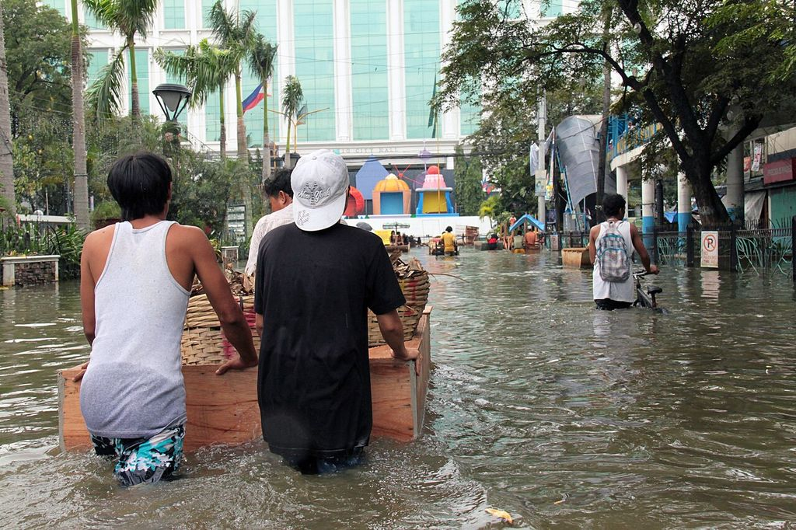
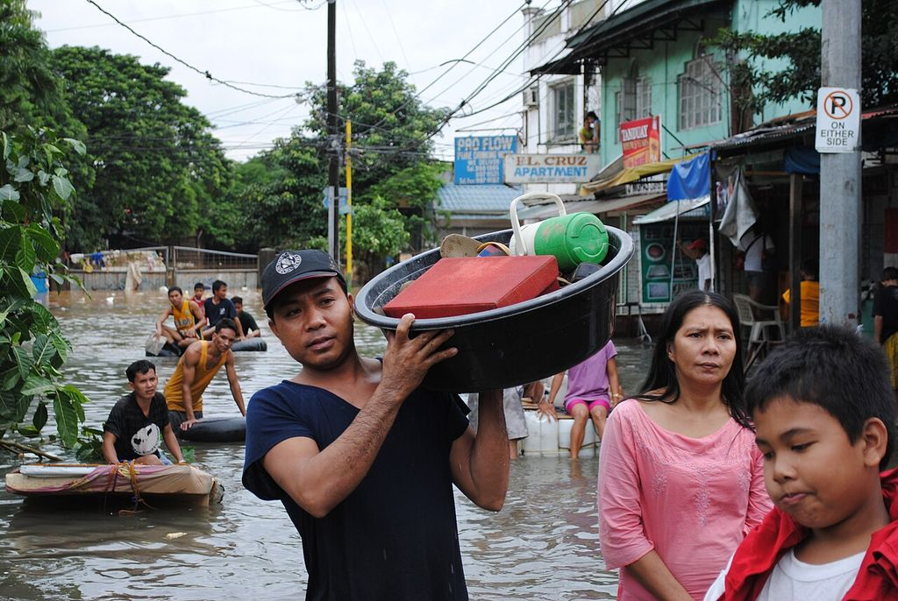
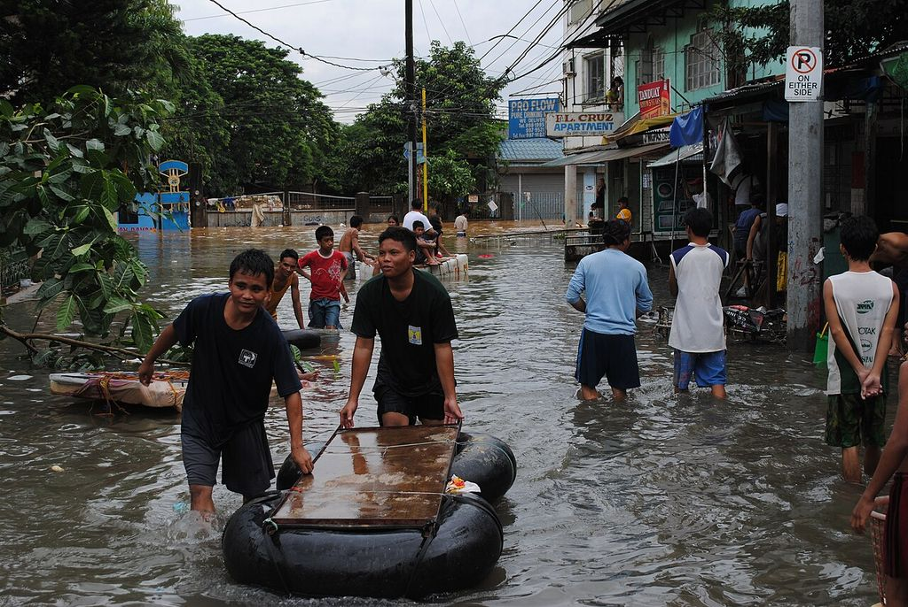
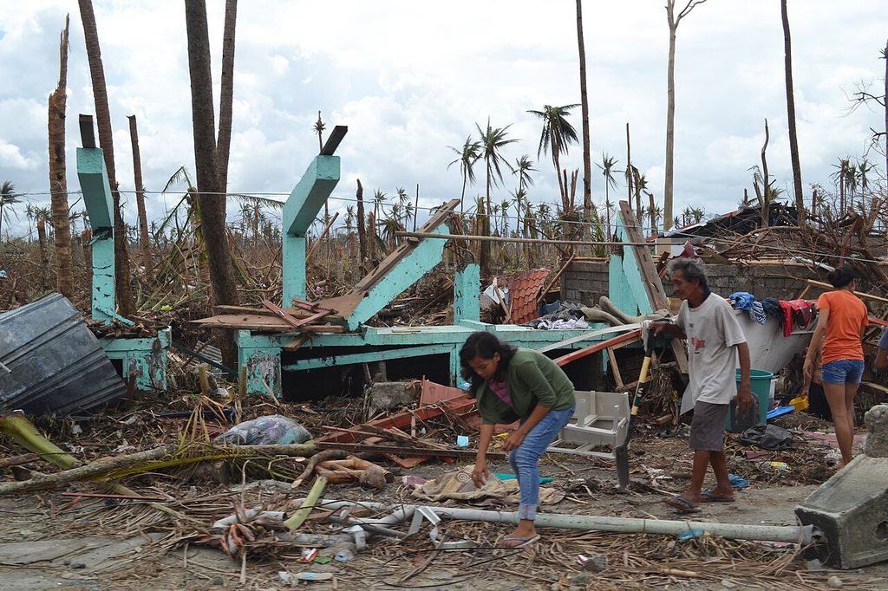
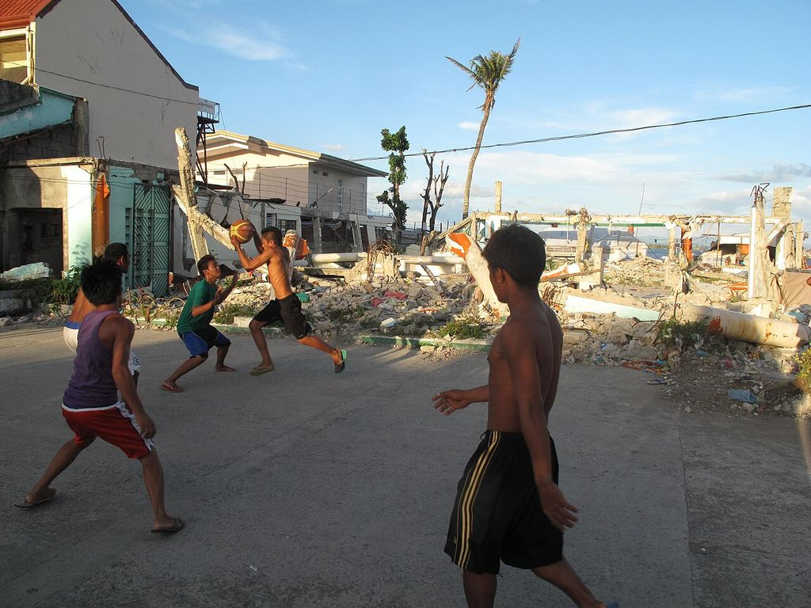
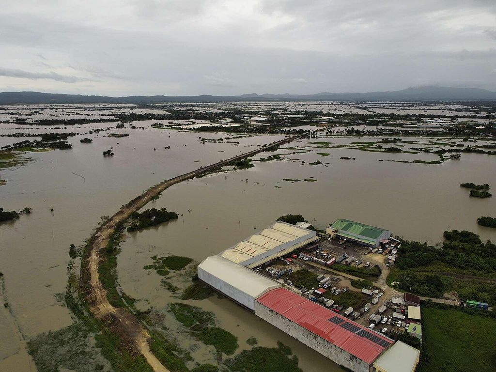

Floods are part of life in the Philippines. Behind every number are families who wade to work, carry what they can, and wait on rooftops for rescue. This page remembers some of them.
Some photographs show homes destroyed by storms. None show people who died.
The floods
1991 Ormoc flash flood (Uring)
Rain from Tropical Storm Uring (Thelma) sent the Ormoc River over its banks on 5 November, carrying logs into the city’s lower districts. The city government counts 4,922 dead and 3,000 missing (source: Ormoc City government, History); a later mayor put the toll near 8,000 (source: Inquirer, “Monument marks 20th year of Ormoc flood”, 8 Nov 2011). Illegal logging upstream was widely blamed.
2009 Ondoy (Ketsana)
On 26 September, 341 mm of rain fell on Metro Manila in six hours (source: GMA News, NDCC update, 1 Oct 2009), more than the city’s previous record for a whole day. In the worst-hit cities floodwater reached from knee to neck, up to rooftops (source: Rappler, “Looking back: the records of Ondoy”); the national disaster council’s final count was 464 dead, 37 missing and about 4.9 million people affected (source: Rappler, “Looking back: the records of Ondoy”).

,_Philippines_2009._Photo-_AusAID_(10695910543).jpg){kind=link}

,_Philippines_2009._Photo-_AusAID_(10695893643).jpg){kind=link}
2011 Sendong (Washi)
The storm crossed Cagayan de Oro around midnight on 16–17 December, and the river rose from about 2 m to 10 m, sweeping through riverbank settlements. Many people drowned in their sleep. 1,268 died (source: Inquirer, “What went before: Tropical Storm Sendong”, 28 Dec 2014) in Cagayan de Oro, Iligan and nearby provinces; 181 bodies were never recovered (source: Heinrich Böll Stiftung, “10 years after Typhoon Sendong”, 21 Oct 2022).

2012 The habagat (monsoon) floods
Over four days in August the southwest monsoon, strengthened by two typhoons offshore, left about half of Manila under water (source: SBS News / AFP, “Half of Manila submerged”, 8 Aug 2012). By 17 August the national disaster council counted 109 dead and 4.2 million people affected (source: IFRC emergency appeal MDRPH010, citing NDRRMC as of 17 Aug 2012).

.jpg){kind=link}

.jpg){kind=link}
2013 Yolanda (Haiyan)
On 8 November Yolanda drove a storm surge into Tacloban and the coasts of Eastern Visayas. Nearly six months later the national disaster council counted 6,300 dead and 1,061 missing (source: GMA News, NDRRMC Yolanda toll, 17 Apr 2014).



.jpg){kind=link}

.jpg){kind=link}
2020 Ulysses (Vamco)
In November the Marikina River rose to 22.0 m, above Ondoy’s 21.5 m (source: Philstar, Marikina floods, 12 Nov 2020), and in Cagayan families spent days on their roofs (source: Philstar, “Massive flooding sinks Cagayan”, 15 Nov 2020). The national count reached 101 dead and 4.9 million affected (source: Philstar, NDRRMC Ulysses toll, 10 Dec 2020).

_of_Typhoon_Vamco_(2020)_in_Calumpit,_Bulacan_01.jpg){kind=link}
2024 Carina (Gaemi) and the habagat (monsoon)
In July rain reached 74 mm an hour, against drains built for about 30 (source: Inquirer, “Carina floods leave PH capital in state of calamity”, 25 Jul 2024), and Metro Manila declared a state of calamity. The national count: 46 reported dead, more than 6 million affected (source: Inquirer, NDRRMC toll for Carina, the habagat (monsoon) and Butchoy, 4 Aug 2024).


2024 Kristine (Trami)
In October residents of Bicol called it the worst flooding in 30 years (source: Daily Tribune, 23 Oct 2024), and many waited on rooftops for rescue (source: Philstar, Kristine landslide and floods, 26 Oct 2024). Counted together with Typhoon Leon, which followed, the toll reached 145 dead and 37 missing (source: GMA News, NDRRMC toll for Kristine and Leon, 30 Oct 2024) by 30 October.


2025 Tino (Kalmaegi)
On 4 November floodwater in Cebu trapped families on rooftops (source: Inquirer, “Tino floods leave cars in piles, trap families on rooftops”, 5 Nov 2025) in Liloan, Consolacion, Mandaue and Talisay, and piled cars in the streets. By 17 November the Office of Civil Defense counted 269 dead and 113 missing nationwide, 150 of the dead in Cebu (source: GMA News, “269 dead, 523 injured due to Typhoon Tino — OCD”, 17 Nov 2025).


2026 Monsoon and three storms
Through August the habagat (monsoon) and Tropical Cyclones Luis, Maymay and Neneng brought floods and landslides from Baguio to Batangas: 33 dead and 8.8 million people affected (source: Philstar, NDRRMC toll for the 2026 habagat (monsoon) and cyclones, 31 Aug 2026) by 31 August, the national disaster council said.
Lives lost
In the ten floods on this page, at least 13,657 people died, 4,451 went missing and 39,109 were injured.
- = 10 people who died
- = 10 people missing
- families affected, to scale
- 1991 Ormoc (Uring)4,922 dead · 3,000 missing (source: Ormoc City government, History) · 3,050 injured (source: UN DHA report of 22 Nov 1991 on the storm, via ReliefWeb (that count: 3,840 dead, 2,000 missing))No count of families affected found
- 2009 Ondoy (Ketsana)
- 2011 Sendong (Washi)
- 2012 Habagat (monsoon) floods
- 2013 Yolanda (Haiyan)
- 2020 Ulysses (Vamco)
- 2024 Carina and the habagat (monsoon)
- 2024 Kristine and Leon
- 2025 Tino (Kalmaegi)
- 2026 Monsoon and three storms
A part-figure stands for fewer than 10. These are official counts for each storm or monsoon as a whole, the latest we found: they include every death, not only drowning, and Ormoc’s injured come from the UN’s count. Families are counted flood by flood, so a family hit more than once is counted more than once; together the counts pass 13 million. “Over” and “about” counts are drawn at the figure given.
Living with water
For many families, flooding is not an event but a season, or a tide. Much of Metro Manila and the land around northern Manila Bay is sinking, largely because groundwater is pumped out faster than it returns. Between 2003 and 2011 parts of Caloocan, Malabon, Navotas and Valenzuela sank by up to 4.2 cm a year (source: Eco, Rodolfo, Sulapas et al., “Disaster in slow motion”, JSM Environmental Science & Ecology, 2020), and around northern Manila Bay several centimetres to more than a decimetre a year (source: Rodolfo and Siringan, Disasters, 2006). Metro Manila’s drains handle about 30 mm of rain an hour (source: Inquirer, 25 Jul 2024).
In Macabebe, Pampanga, researchers in 2025 found neighbourhoods permanently under water (source: UP Resilience Institute, fieldwork in Macabebe and Obando, 2025). “Since July… the villages haven’t dried,” a local official told the Inquirer (source: Inquirer, “Pampanga folk break silence after years of flooding”, 1 Oct 2025) that October.


The politics of flood control
In 2025 flood control became the country’s biggest political story. What follows is what happened and who said what, as reported by news outlets; people charged are presumed innocent until a court decides.
In his State of the Nation Address, President Ferdinand Marcos Jr. condemned failed and “ghost” flood-control projects: “Mahiya naman kayo” (“Shame on you”). He ordered a list of every flood-control project of the past three years (source: Inquirer, 28 Jul 2025) and promised charges against those found connected (source: Philstar, 28 Jul 2025).
He opened Sumbong sa Pangulo (“Report to the President”) (source: Inquirer, 11 Aug 2025), a public website mapping the projects, and said 15 contractors had won more than ₱100 billion of the ₱545 billion in 9,855 projects since July 2022 (source: GMA News special report, “The corruption of Philippine flood control projects”).
Senate and House hearings followed. Public Works Secretary Manuel Bonoan resigned; Vince Dizon replaced him (source: Philstar, 31 Aug 2025). Contractors Sarah and Curlee Discaya named lawmakers and officials as allegedly involved; House Speaker Martin Romualdez and several others named denied it (source: GMA News, 8 Sep 2025).
Vicente Sotto III replaced Francis Escudero as Senate President (source: Philstar, 9 Sep 2025), and Mr Romualdez resigned as House Speaker amid the allegations (source: Philstar, 17 Sep 2025), which he denies; Faustino Dy III succeeded him.
An executive order created the Independent Commission for Infrastructure (source: Inquirer, 12 Sep 2025) to investigate public works of the past ten years, chaired by retired Justice Andres Reyes Jr. (source: SunStar, “Timeline: the flood control scandal”, 29 Oct 2025).
Tens of thousands joined the Baha sa Luneta (“Flood at Luneta”) and Trillion Peso March protests: at least 50,000 at Luneta by the Manila disaster office’s count, and 60,000 to 70,000 at EDSA by the organisers’ (source: GMA News, 21 Sep 2025). Separate clashes near Mendiola ended in 216 arrests and more than 100 police and about 70 civilians injured (source: Philstar, 22 Sep 2025).
After Typhoon Tino, the President ordered an investigation of Cebu’s flood-control projects (source: GMA Regional TV, 6 Nov 2025); Cebu’s governor said the province had received ₱26 billion in flood-control funds “yet we are flooded to the max”.
The first cases reached the anti-graft court, which ordered the arrest of former Representative Zaldy Co and 15 others (source: Inquirer, Nov 2025) over a ₱289-million dike in Oriental Mindoro. Mr Co has remained abroad (source: Inquirer, “Gov’t fails to secure Co, now says he’s in France”, 2026). On 30 November police counted about 90,000 people at 119 rallies nationwide (source: Philstar, 1 Dec 2025).
Former Senator Bong Revilla surrendered on a malversation warrant (source: Philstar, 19 Jan 2026). He has denied involvement; when he refused to enter a plea, the court entered not guilty for him (source: PhilSTAR Life, Revilla plea). Senator Jinggoy Estrada surrendered on a plunder warrant (source: SunStar, 1 Jun 2026) and denies the charges. The commission referred 65 people for prosecution and reported ₱24.7 billion in assets frozen, seized or surrendered (source: Philstar, 6 Feb 2026), then handed its evidence to prosecutors (source: Manila Bulletin, 23 Mar 2026).
In his next address the President said more than ₱800 million had been returned (source: Inquirer, 27 Jul 2026); GMA News counted 45 people charged in 26 cases (source: GMA News, 28 Jul 2026).
The Ombudsman charged former Speaker Romualdez with plunder (source: Philstar, 7 Sep 2026) over ₱7.44 billion; he denies wrongdoing. He was arrested, pleaded not guilty (source: Philstar, 17 Sep 2026) and has asked for bail (source: Inquirer, 28 Sep 2026). The anti-graft court said its first decisions may come this year (source: Daily Tribune, 10 Sep 2026).


As of 1 October 2026 we found no report of a verdict in any of the flood-control cases.
Photo credits
Every photograph is from Wikimedia Commons under an open licence, credited under the photo with its licence and a link to its page. We resized them for the web and changed nothing else. Photos under CC BY-SA keep that licence. The Philippine government photos are public domain under Section 176 of the Intellectual Property Code.
Facts and figures link to their sources where they appear. Tolls are the latest official counts we could find and may differ from other reports. Write to Noam (on the homepage) to correct anything here.